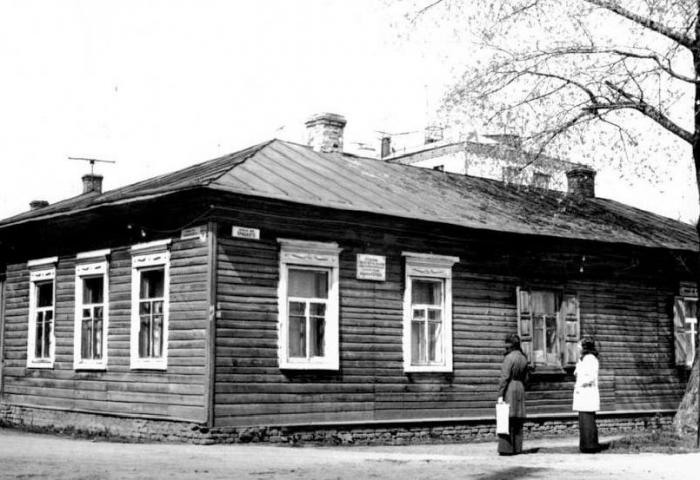

Культурное наследие
Традиции, искусство и знаменитые личности
Музыкальные традиции
Стародуб известен своими музыкальными традициями, во многом благодаря деятельности композитора Александра Рубца.
Русская народная песня в обработке А.И. Рубца
0:00 / 1:57

Александр Иванович Рубец
Композитор и собиратель русских народных песен, проживавший в Стародубе с 1895 по 1913 год. Рубец записал и обработал более 800 народных песен.
В Стародубе сохранился дом, где жил композитор, а на улице Калинина установлен памятник в его честь.